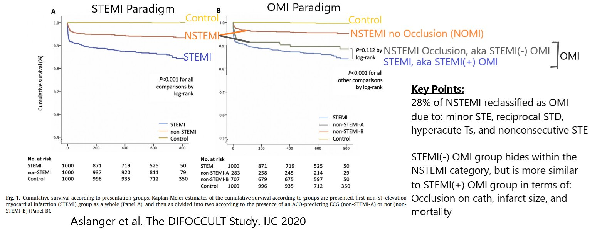

31/07/2020 — Mô hình OMI-NOMI được xác lập là tốt hơn STEMI-NSTEMI qua bài báo mới
Bản dịch tiếng Việt của bài "OMI-NOMI paradigm established as better than STEMI-NSTEMI with new article" – Dr. Smith’s ECG Blog. Giữ nguyên toàn bộ 1 hình ảnh của bản gốc.
Dữ liệu: Mô hình OMI-NOMI đã được xác lập là tốt hơn STEMI-NSTEMI — theo bài báo mới của Emre Aslanger (với đôi chút trợ giúp từ Smith).
- Thuật ngữ: “ACOMI” = OMI do mạch vành cấp (Acute Coronary OMI)
= = =
Tài liệu tham khảo của bài này:
- Aslanger EK, Smith SW, và cs.: DIagnostic accuracy oF electrocardiogram for acute coronary OCClUsion resuLTing in myocardial infarction (DIFOCCULT Study) — IJC Heart & Vasculature, Vol. 30, 2020.
= = =
Hình MẤU CHỐT của bài báo này:


= = =
======================================
BÌNH LUẬN CỦA TÔI, bởi KEN GRAUER, MD (31/7/2020 — Cập nhật cho WordPress ngày 22/4/2026):
Trong bài ngày 1 tháng Tư năm 2018 trên Dr. Smith’s ECG Blog — các Dr. Meyers, Weingart và Smith đã công bố Tuyên ngôn OMI (OMI Manifesto) của họ — trong đó họ ghi nhận chi tiết khái niệm cực kỳ quan trọng rằng việc xử trí nhồi máu cơ tim cấp bằng cách chia thành hai nhóm “STEMI” và “không STEMI” là một cách tiếp cận sai lầm không thể cứu vãn.
- Tuyên ngôn OMI của họ trình bày chi tiết việc dùng các tiêu chuẩn STEMI chuẩn dẫn đến mức độ thiếu chính xác không thể chấp nhận được, trong đó ước tính 25-30% các trường hợp tắc mạch vành cấp bị bỏ sót! Vậy mà bất chấp khiếm khuyết đáng kể này của mô hình STEMI — một số lượng lớn (nếu không muốn nói là đa số rõ rệt) bác sĩ lâm sàng vẫn tiếp tục áp dụng các tiêu chuẩn lỗi thời khi đọc điện tâm đồ, khi từ chối cân nhắc thông tim sớm để chẩn đoán xác định và điều trị tái tưới máu chỉ vì định nghĩa STEMI cấp dựa trên milimét không được thỏa mãn.
Với hy vọng xóa bỏ sự lệ thuộc dai dẳng vào các tiêu chuẩn STEMI dựa trên milimét — trong những năm gần đây chúng tôi đã đăng nhiều ca trên Dr. Smith’s ECG Blog về OMI (nhồi máu cơ tim do tắc – Occlusion-based Myocardial Infarction) cấp, trong đó bệnh nhân được hưởng lợi từ tái tưới máu cấp mặc dù không thỏa mãn “tiêu chuẩn STEMI”.
- Bài báo của Aslanger, Smith và cs. được giới thiệu ở trên trong bài hôm nay vừa được công bố. Bài báo đáng chú ý vì cung cấp thêm bằng chứng ủng hộ một sự chuyển đổi mô hình — từ bỏ cách tiếp cận “STEMI” và “không STEMI” kém hiệu quả hơn nhiều — để chấp nhận một cách tiếp cận mới hơn, nhận biết các chỉ điểm điện tâm đồ khác cho chúng ta biết bệnh nhân trước mặt đang có triệu chứng tim mới xuất hiện rất có khả năng bị tắc mạch vành cấp (ACO – Acute Coronary Occlusion) — và do đó cần được thông tim sớm và tái tưới máu cấp mặc dù có điện tâm đồ có thể không đạt định nghĩa STEMI theo milimét.
LƯU Ý: Các dấu hiệu điện tâm đồ sau đây, khi gặp cùng với triệu chứng tim mới xuất hiện, nằm trong số những dấu hiệu gợi ý OMI cấp mặc dù không thỏa mãn định nghĩa STEMI dựa trên milimét:
- Sóng T tối cấp (hyperacute T waves) (cao không tương xứng và/hoặc “đầy hơn” ở đỉnh hay rộng hơn ở đáy so với mức đáng lẽ phải có khi xét biên độ sóng R và sóng S ở chuyển đạo đó). Càng nhiều chuyển đạo trong một vùng chuyển đạo cho thấy thay đổi tối cấp — thì càng đáng lo ngại OMI cấp.
- Biến dạng phần cuối QRS (terminal QRS distortion) (tức là, không có cả sóng J lẫn sóng S ở hoặc chuyển đạo V2 hoặc chuyển đạo V3) — XEM Bình luận của tôi trong bài ngày 14 tháng Mười Một năm 2019 để có minh họa và mô tả về T-QRS-D.
- ST chênh lên trông đáng ngờ nhưng không thỏa mãn tiêu chuẩn STEMI — đặc biệt khi có ST-T chênh xuống soi gương và/hoặc hình dạng đoạn ST bất thường ở các chuyển đạo khác. Càng nhiều chuyển đạo có dấu hiệu đáng ngờ — thì càng đáng lo ngại một biến cố cấp đang diễn ra.
- Bất kỳ ST chênh lên nào ở các chuyển đạo thành dưới xảy ra cùng với ST chênh xuống đối nghịch dạng soi gương ở chuyển đạo aVL.
- ST chênh xuống tối đa ở các chuyển đạo V2 đến V4.
- Dấu hiệu thay đổi ST-T động trên các bản ghi liên tiếp đi kèm với sự thay đổi triệu chứng đau ngực (XEM Bình luận của tôi trong bài ngày 21 tháng Bảy năm 2020).
- ĐIỀU CỐT LÕI: Cần thời gian (và một chút luyện tập) — để thích nghi với khái niệm rằng chúng ta có thể trở nên giỏi trong việc nhận biết chính xác và tự tin nhiều ca tắc mạch vành cấp, ngay cả khi tiêu chuẩn STEMI định nghĩa theo milimét không đạt. Bài báo mới công bố của Aslanger, Smith và cs. được trích dẫn ở trên bổ sung thêm cơ sở cho khối y văn ngày càng lớn về lý do vì sao chúng ta nên buộc bản thân làm như vậy.
- T.B. (P.S.): Bài ngày 3 tháng Chín năm 2020 của chúng tôi giới thiệu bản tóm tắt 17 phút của Dr. Meyers về Tuyên ngôn OMI.
- T.B.T.B. (P.P.S.) (14/1/2023): Tôi bổ sung tài liệu tham khảo mới nhất này của McLaren, Meyers & Smith (J Electrocardiol 76:39-44, 2023) — dựa trên bài nói chuyện gần đây của Dr. Smith tại Hội Máy tính trong Điện tâm đồ học Quốc tế (International Society of Computers in Electrocardiology) — cung cấp một bản tóm tắt tuyệt vời về Mô hình OMI (so với STEMI) mới. Không chịu thích nghi với mô hình OMI sẽ chỉ dẫn đến sự hiểu lầm kéo dài trong y văn tim mạch vốn đã bị “mắc kẹt” khi khăng khăng bám vào các tiêu chuẩn STEMI lỗi thời (bỏ sót ít nhất 30% tổng số nhồi máu cơ tim do tắc mạch cấp! ).
= = =
= = =